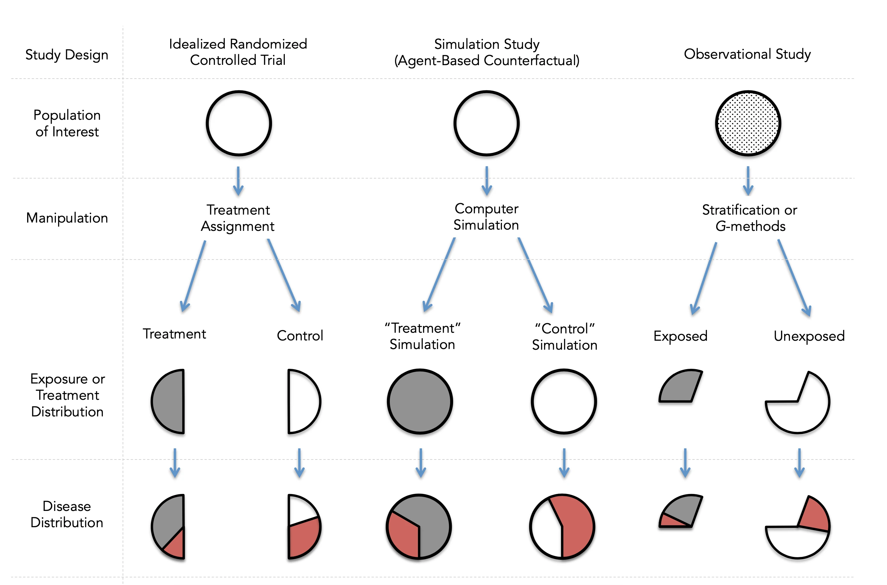
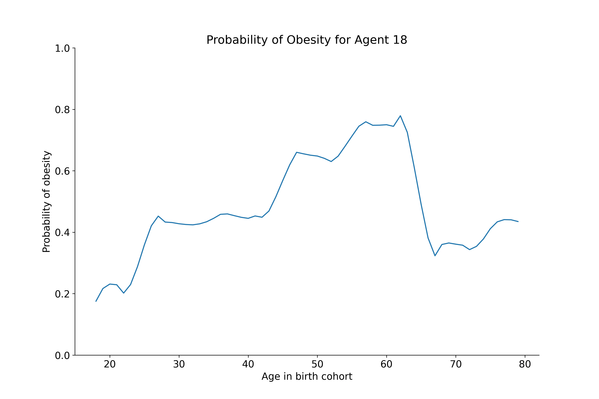
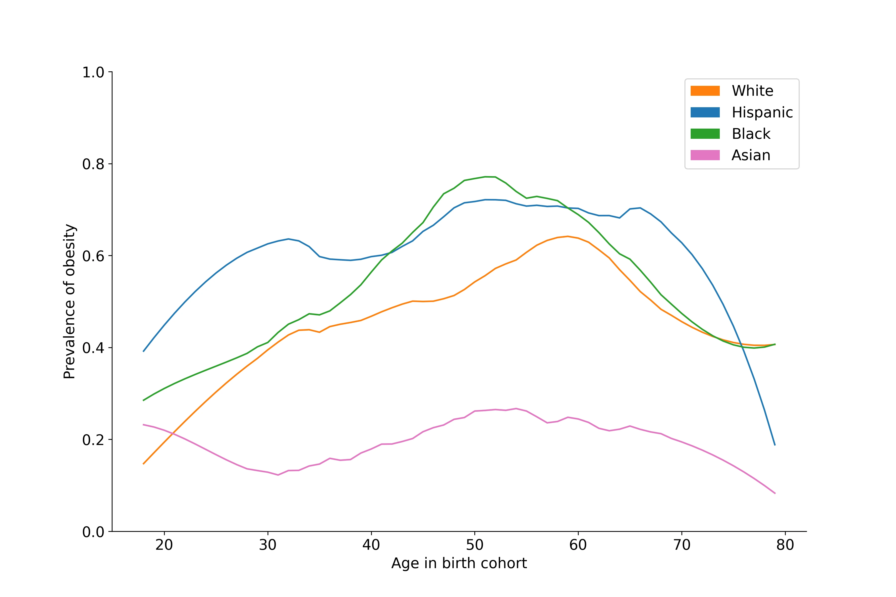
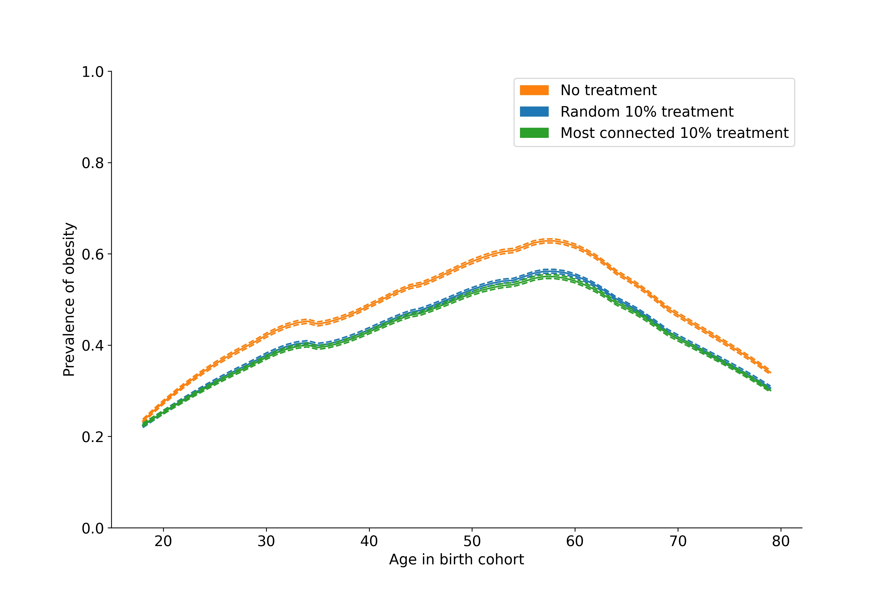

Roni Kobrosly Ph.D.'s Website
written by Roni Kobrosly on 2022-02-24 | tags: machine learning causal inference
Obesity, as a public health problem, has an enormous amount of "causes". Some of them are systems-level causes like the types of farmed foods we tend to subsidize on a national level, our policies around public transit, the walkability of neighorhoods, the presence of food deserts, our social networks and their attitudes toward obesity, the media, etc etc. Of course, there are individual-level causes too like one's diet, one's finances, one's education level, etc. This is basically the idea behind the Social Determinants of Health.
If you wanted to explore some potential solutions to this public health problem, you might consider running an experiment to test out policies that could help out. Problem is, experiments can take time to build out and are costly. You could use historic data and perform causal inference to try to infer which actions might be helpful in a causal way. But the causes of obesity are complex, and maybe it'll be difficult to model all of that!
I recently came across a great academic paper (from an grad school mentor) that takes a stab at addressing this problem through simulations, and I think the lessons from this are very much applicable to some business problems we face in industry. The authors propose a third way to understand the causal effects of possible solutions, they create a simulation! Specifically an agent-based model.
 You can read the original paper here
They were curious if targetting people's social networks would have an impact on obesity at the population level. They created thousands of simulated people, assign them demographic features (race, income, education, etc.), follow them forward in time from their teens into old age, allow them to connect to each other through social groups (It's been shown that having obesity in one's social network is associated with an increased risk of obesity. The increased risk isn't trivial! "A person's chances of becoming obese increased by 57% if he or she had a friend who became obese in a given interval."), belong to distinct neighorhood types, etc. They used government data to determine how they should assign features to the "agents" and used public, published studies to program in how the individual- and systems- level attributes would influence their probability of obesity each year. With this, they basically have a complex model of the world, and they can freely play with parameters to see if it impacts how much obesity develops in the population. Cool right?
I recently learned about a python tool named Mesa and wanted to try this out for myself. So I read through their paper, gathered government data (NHANES data) and program this virtual world with the same rules as in the paper. Like they did in the paper, I created an environment with moderate racial, educational, and income segration. Each node represents a agent/person, each line represents a social connection:

As you do in agent-based modeling, I let the simulation run, allowing the agents to age from 18 to 80 years. The probability of an agent being obese year varied based on factors mentioned before like their age, race, education, income, social connections, neighborhood characteristics, and more.

I found the following prevalences of obesity throughout the lifecourse (which aren't too far off from real national-level estimates).

Remember, the point of doing this is tweak the parameters of this simulation and identify whether certain actions/policies could help reduce the population obesity problem. In the original paper, they were curious whether preventing the most focusing obesity prevention efforts on the most connected individuals in large networks of people could be a meaningful course of action to reduce obesity in populations. Like in the paper, I "forced" the 10% most connected individuals to never become obese, I "forced" a random 10% of the population to never become obese, and I also took no action. Running the simulation 100 times in each scenario, I got the following results (with 95% confidence intervals):

So, it does not seem like targetting the most connected individuals does anything meaningful beyond targetting random individuals. That is useful, actionable info!
How could possibly be an industry, analytics use-case for something this? I think there could be a place for this when modeling consumer product preferences, or exploring network-wide effects of interventions in social media.
If you're interested, the simulation code is up on GitHub.